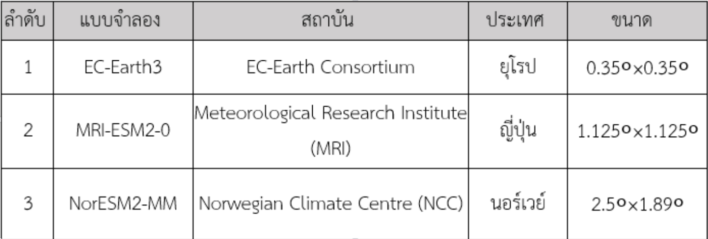
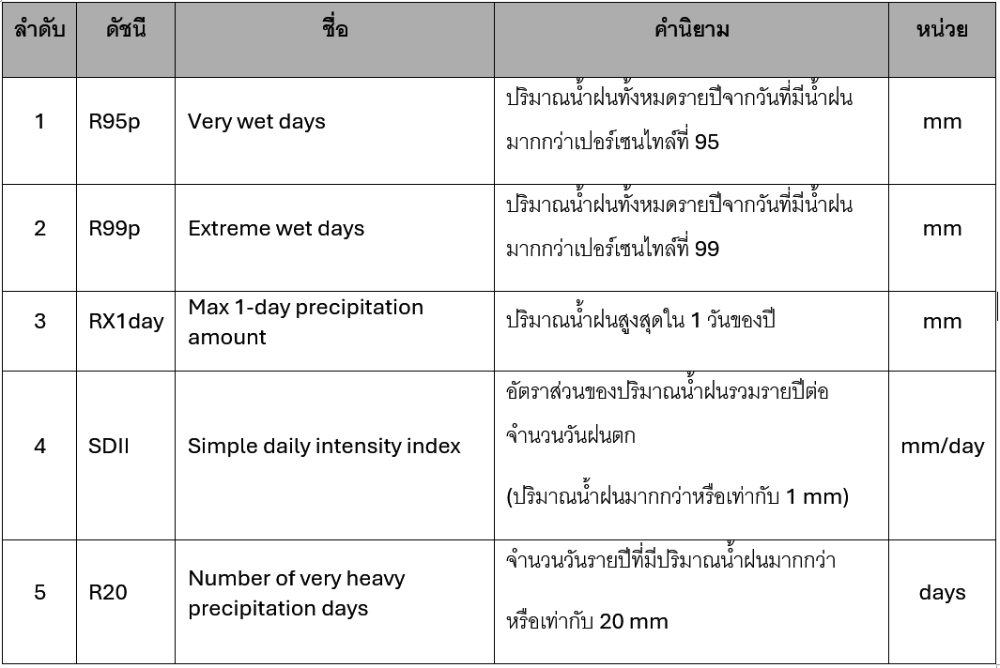
แบบจำลอง EC-Earth3, MRI และ NorESM ได้รับการทดสอบแล้วว่ามีความแม่นยำสูงในการจำลองพฤติกรรมลมมรสุมในเขตศูนย์สูตรได้ใกล้เคียงความจริงที่สุดสำหรับการศึกษาฝนในภาคใต้
ใช้วิธี Linear Scaling และ IDW
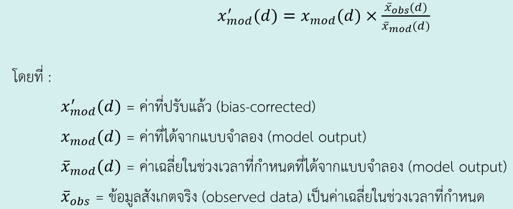
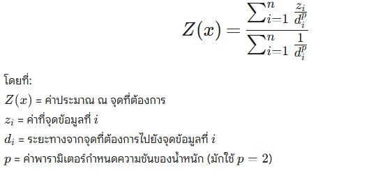
Linear Scaling ใช้เพื่อปรับแก้ข้อมูลจำลองให้สอดคล้องกับค่าตรวจวัดจริง ส่วน IDW Power=2 ใช้เพื่อความสมดุลของการกระจายน้ำหนักตามระยะทางเชิงพื้นที่
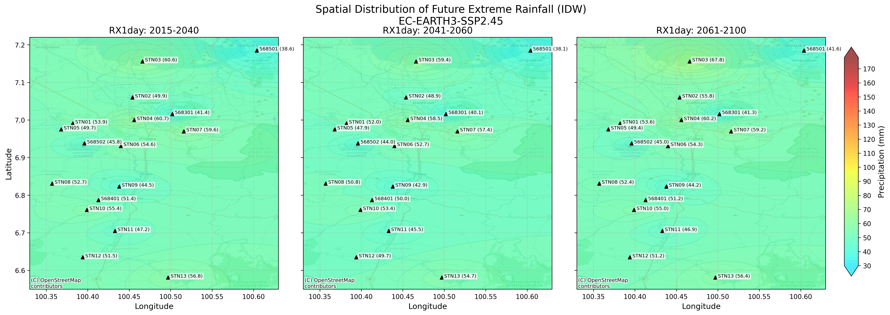
EC 2.45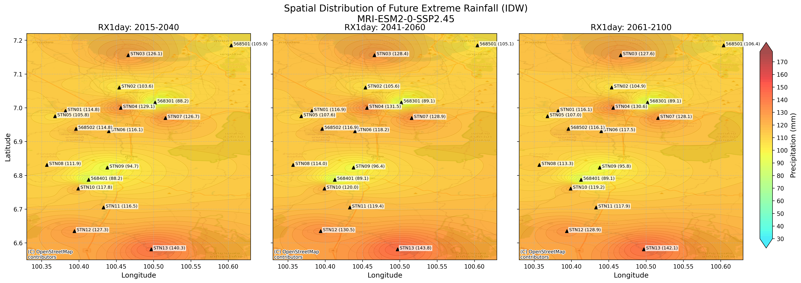
MRI 2.45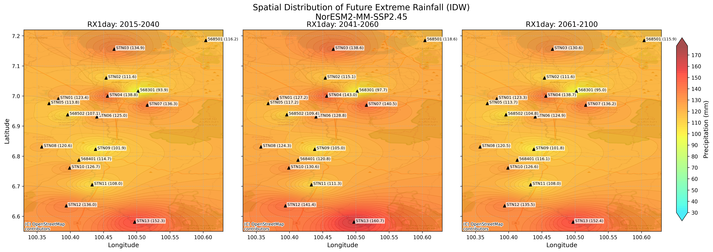
Nor 2.45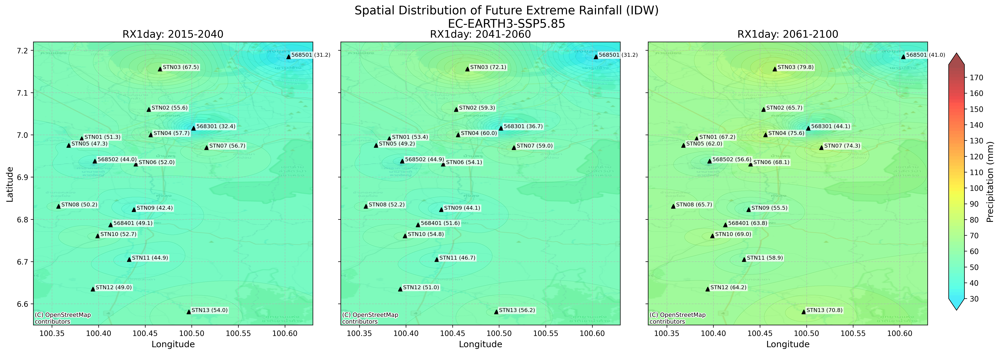
EC 5.85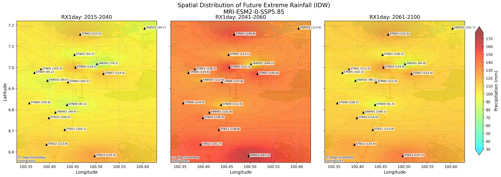
MRI 5.85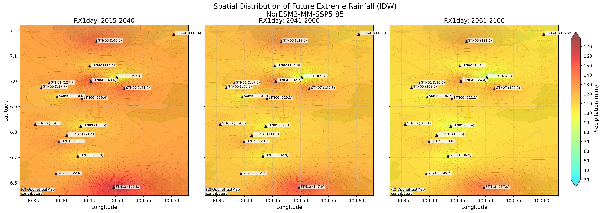
Nor 5.85แผนที่ IDW ระบุว่าปริมาณฝนหนักใน 1 วัน (RX1day) จะขยับตัวสูงขึ้นเรื่อยๆ โดยเฉพาะบริเวณสถานี STN01 และ STN04 ซึ่งเป็นพื้นที่ลุ่มต่ำ
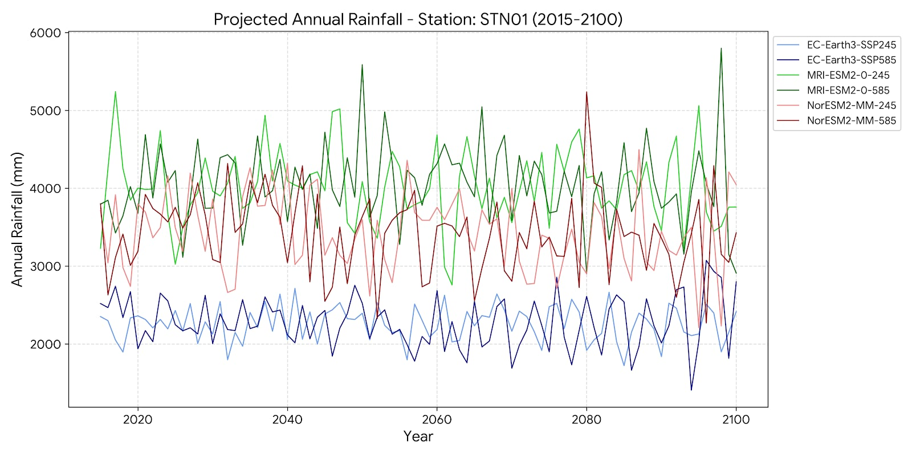
ปริมาณฝนรายปีแสดงความผันผวนสูง โดยเฉพาะทศวรรษ 2040-2070 ภายใต้แบบจำลอง EC-Earth3 และ MRI
ภาพรวมปริมาณฝนสะสมมีแนวโน้มเพิ่มขึ้นเล็กน้อย แต่สิ่งที่น่ากังวลคือความถี่ของการเกิดฝนตกหนักรุนแรงในระยะเวลาสั้นๆ
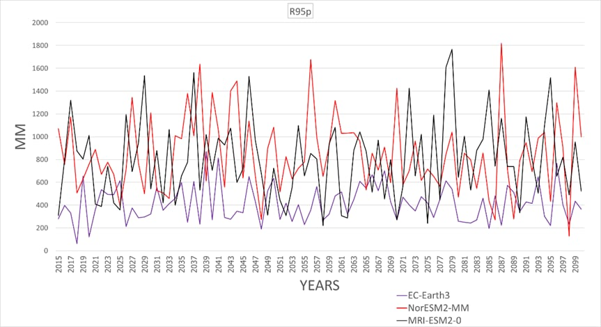
R95p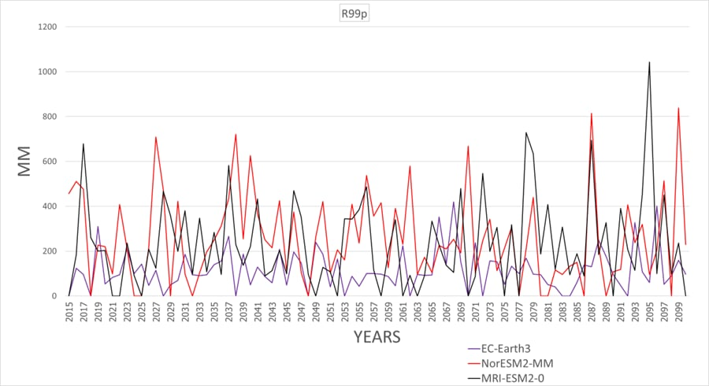
R99p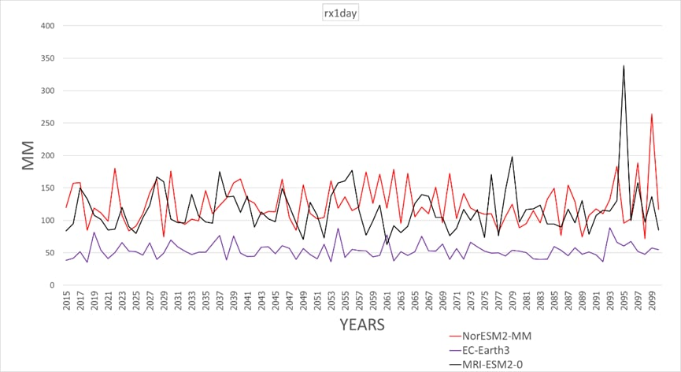
RX1day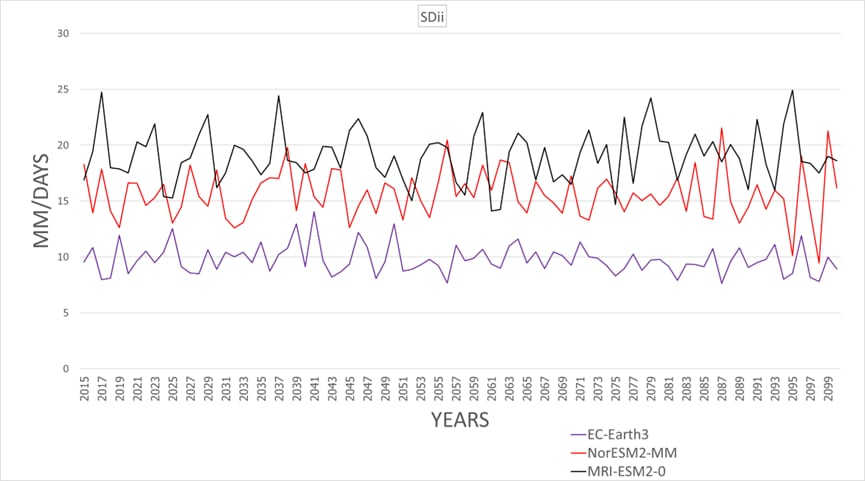
SDII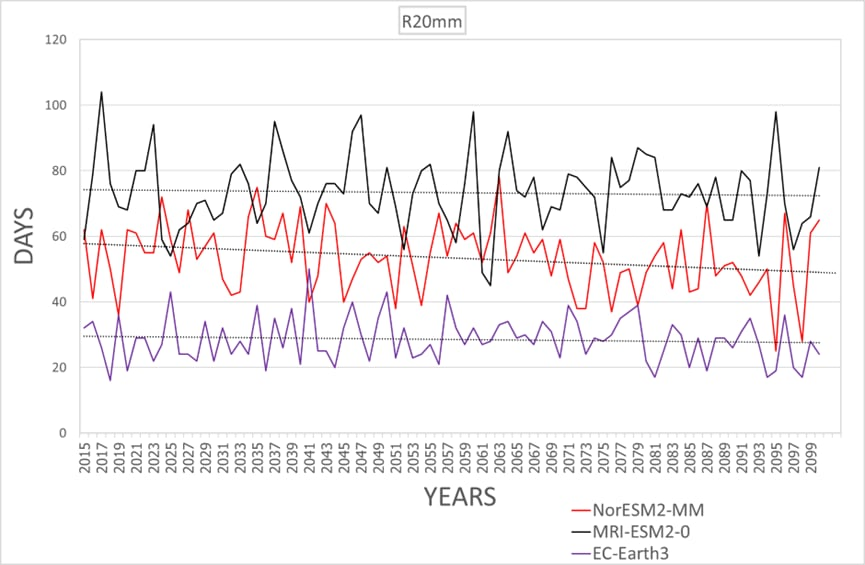
R20mmค่า R99p (Extreme Rainfall) พุ่งขึ้นสูงสุด แสดงถึงแนวโน้มที่จะเกิดฝนตกหนักแบบผิดปกติ (Once in a century) บ่อยครั้งขึ้น
| ดัชนี | SSP245 | SSP585 | ผลต่าง |
|---|---|---|---|
| RX1day | 0.019 | 0.184 | +10 เท่า |
| R95p | 0.137 | 1.171 | +8.5 เท่า |
| R99p | 0.044 | 0.951 | +21 เท่า |
| SDII | -0.007 | -0.007 | เท่ากัน |
| R20mm | -0.077 | -0.091 | ลดลง |
| ดัชนี | SSP245 | SSP585 | ผลต่าง |
|---|---|---|---|
| RX1day | 0.038 | 0.097 | +2.5 เท่า |
| R95p | 1.091 | 1.006 | ใกล้เคียง |
| R99p | 0.096 | 0.380 | +4 เท่า |
| SDII | 0.006 | 0.004 | ลดลง |
| R20mm | 0.000 | -0.021 | ลดลง |
| ดัชนี | SSP245 | SSP585 | ผลต่าง |
|---|---|---|---|
| RX1day | -0.024 | -0.253 | -10.5 เท่า |
| R95p | -0.516 | -1.977 | -3.8 เท่า |
| R99p | -0.749 | -0.501 | ใกล้เคียง |
| SDII | -0.008 | -0.004 | - |
| R20mm | -0.111 | -0.051 | ลดลง |
หมายเหตุ: ฉากทัศน์ SSP5-8.5 แสดงนัยสำคัญทางสถิติ บ่งชี้ความรุนแรงของฝนที่เพิ่มสูงขึ้นมากในรุ่น EC-Earth3 และ MRI
ดัชนี RX1day และ R99p พุ่งสูงขึ้นในสถานี STN01 สะท้อนพฤติกรรมฝนที่ตกหนักขึ้นในแต่ละเหตุการณ์ ในขณะที่รุ่น NorESM พยากรณ์ปริมาณฝนที่ลดลง สะท้อนความไม่แน่นอนและโอกาสเกิดภัยแล้งในระยะยาว